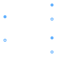

This package contains components for modeling electrical machines, specially threephase induction machines, based on space phasor theory.
Extends from Modelica.Icons.Package (Icon for standard packages).
| Name | Description |
|---|---|
| Partial model of transformer core with 3 windings | |
| Ideal transformer with 3 windings |

| Type | Name | Default | Description |
|---|---|---|---|
| Integer | m | 3 | Number of phases |
| Real | n12 | Turns ratio 1:2 | |
| Real | n13 | Turns ratio 1:3 |
| Type | Name | Description |
|---|---|---|
| PositivePlug | plug_p1 | |
| NegativePlug | plug_n1 | |
| PositivePlug | plug_p2 | |
| NegativePlug | plug_n2 | |
| PositivePlug | plug_p3 | |
| NegativePlug | plug_n3 |
partial model PartialCore
"Partial model of transformer core with 3 windings"
parameter Integer m(final min=1) = 3 "Number of phases";
parameter Real n12(start=1) "Turns ratio 1:2";
parameter Real n13(start=1) "Turns ratio 1:3";
Modelica.SIunits.ComplexVoltage v1[
m] = plug_p1.pin.v - plug_n1.pin.v;
Modelica.SIunits.ComplexCurrent i1[
m] = plug_p1.pin.i;
Modelica.SIunits.ComplexVoltage v2[
m] = plug_p2.pin.v - plug_n2.pin.v;
Modelica.SIunits.ComplexCurrent i2[
m] = plug_p2.pin.i;
Modelica.SIunits.ComplexVoltage v3[
m] = plug_p3.pin.v - plug_n3.pin.v;
Modelica.SIunits.ComplexCurrent i3[
m] = plug_p3.pin.i;
Modelica.SIunits.ComplexCurrent im[
m] = i1 + i2/n12 + i3/n13
"Magnetizing current";
QuasiStationary.MultiPhase.Interfaces.PositivePlug plug_p1(final m=m);
QuasiStationary.MultiPhase.Interfaces.NegativePlug plug_n1(final m=m);
QuasiStationary.MultiPhase.Interfaces.PositivePlug plug_p2(final m=m);
QuasiStationary.MultiPhase.Interfaces.NegativePlug plug_n2(final m=m);
QuasiStationary.MultiPhase.Interfaces.PositivePlug plug_p3(final m=m);
QuasiStationary.MultiPhase.Interfaces.NegativePlug plug_n3(final m=m);
equation
//branches p1-n1, p2-n2, p3-n3
Connections.branch(plug_p1.reference, plug_n1.reference);
plug_p1.reference.gamma = plug_n1.reference.gamma;
Connections.branch(plug_p2.reference, plug_n2.reference);
plug_p2.reference.gamma = plug_n2.reference.gamma;
Connections.branch(plug_p3.reference, plug_n3.reference);
plug_p3.reference.gamma = plug_n3.reference.gamma;
//Define p1.reference.gamme = p2.reference.gamma = p3.reference.gamma
Connections.branch(plug_p1.reference, plug_p2.reference);
plug_p1.reference.gamma = plug_p2.reference.gamma;
Connections.branch(plug_p1.reference, plug_p3.reference);
plug_p1.reference.gamma = plug_p3.reference.gamma;
//Define p1, p2 and p3 as potential roots
//Note: transformer could be fed from primary or secondary side
Connections.potentialRoot(plug_p1.reference);
Connections.potentialRoot(plug_p2.reference);
Connections.potentialRoot(plug_p3.reference);
//Current balances
plug_p1.pin.i + plug_n1.pin.i = fill(Complex(0), m);
plug_p2.pin.i + plug_n2.pin.i = fill(Complex(0), m);
plug_p3.pin.i + plug_n3.pin.i = fill(Complex(0), m);
end PartialCore;
Extends from PartialCore (Partial model of transformer core with 3 windings).
| Type | Name | Default | Description |
|---|---|---|---|
| Integer | m | 3 | Number of phases |
| Real | n12 | Turns ratio 1:2 | |
| Real | n13 | Turns ratio 1:3 |
| Type | Name | Description |
|---|---|---|
| PositivePlug | plug_p1 | |
| NegativePlug | plug_n1 | |
| PositivePlug | plug_p2 | |
| NegativePlug | plug_n2 | |
| PositivePlug | plug_p3 | |
| NegativePlug | plug_n3 |
model IdealCore "Ideal transformer with 3 windings" extends PartialCore; equation im = fill(Complex(0), m); v1 = n12*v2; v1 = n13*v3;end IdealCore;